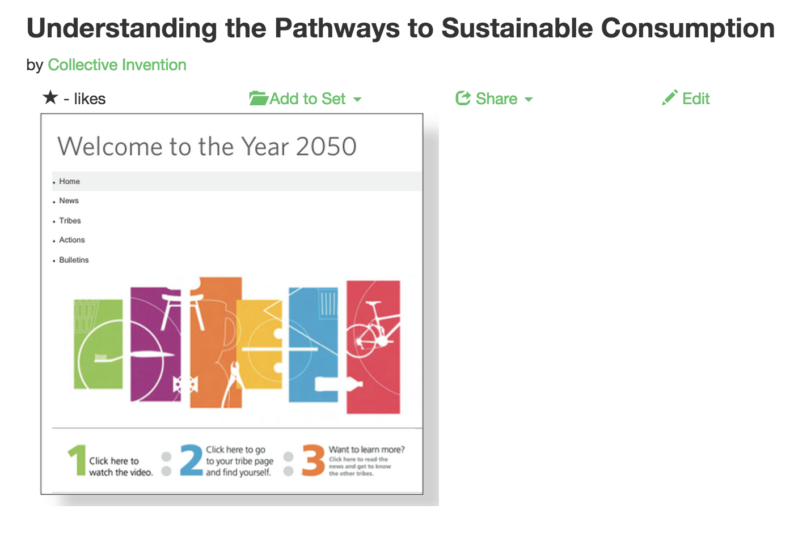
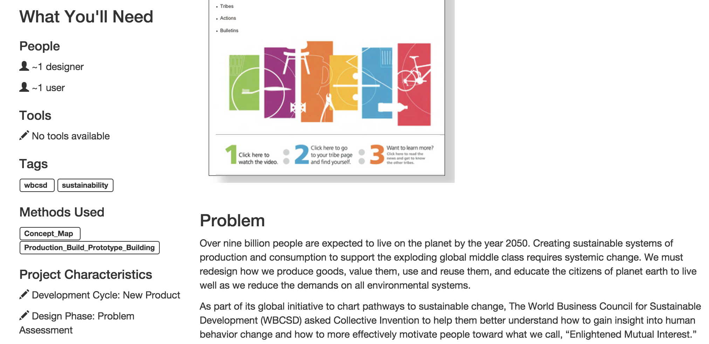
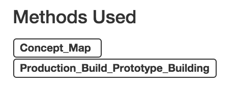

The DesignExchange is a site where designers of all skill levels can join an online community of designers in sharing and discussing ideas about all types of design projects. The site can be used to gather information, learn good practices and methods via case studies, and form discussions around content on the site.

Let’s take a closer look at case studies.
How would a user know the various design methods utilized in a particular case study?
This has been the focus of my work for Fall 2014. This semester, I looked at case studies from a multitude of sites. Each case study page was populated with a problem, process, and outcome taken from the original site. The methods used in the study, however, were not always as apparent.


Methods were generated from the existing database using Sunspot, a feature of the Solr search engine for Ruby objects. Sunspot was included in The DesignExchange application in order to match key words or phrases in a case study to those in the methods database. Some examination of other APIs that provided the type of search needed was also done, and in the future, one of the alternatives may be implemented.
The methods produced by the search were placed under a "Related Methods" section. I then confirmed whether the generated method was actually used in the case study, included methods I noticed were used but were not generated, and finally tagged the case study with the appropriate design methods. These tags are now saved in the database and will appear when a user visits a case study page and looks at the methods used in that study.

In January of 2015...
The DesignExchange site will launch with a new look! After my work with case studies, I created a feedback form feature for the site which will allow initial users to offer feedback on the site’s usability, bugs, etc. My next steps will be to implement a discussion forum for the site.